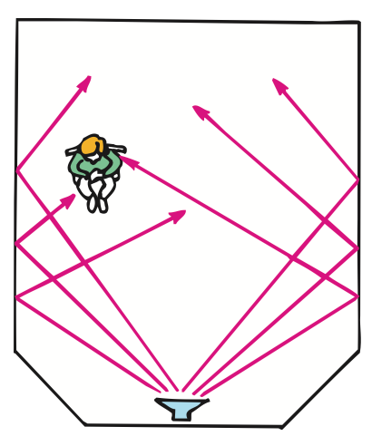
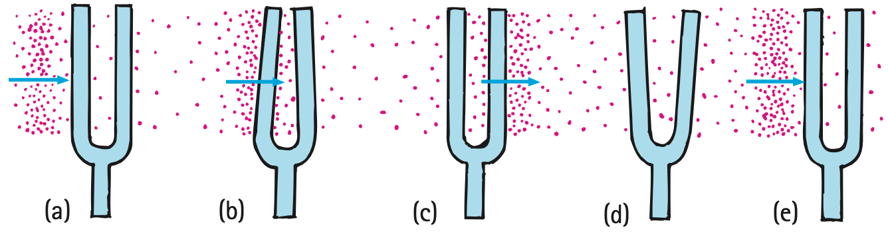

Reflection, Refraction, and Resonance
Mathematical idea: Echo timing uses a round trip, while refraction and resonance are explained by changes in wave speed and matching frequencies.
You will connect concert-hall reflection, warm/cool-air refraction, sounding boards, bells, tuning forks, bridges, and swings to one consistent wave model.
Learning Target
Students will explain how sound reflects, refracts, and causes resonance in real-world situations.
I can statements
- I can explain echoes as reflected sound waves.
- I can explain why sound can bend when wave speed changes in different conditions.
- I can describe forced vibration.
- I can define natural frequency.
- I can explain resonance as a large response when a driving frequency matches a natural frequency.
Vocabulary
These are words you will see in this section. Do not define them yet.
- echo
- reflection
- absorption
- reverberation
- acoustics
- refraction
- forced vibration
- natural frequency
- resonance
- driving frequency
Use the preview activity to decide which words you already know, recognize, or do not know yet. Watch for these words in bold when they are first introduced or defined in the reading.
Preview: Skim Before You Read
Directions
Before reading closely, skim the vocabulary list and the section. Look at titles, headings, bold words, pictures, captions, diagrams, tables, and formulas. Do not try to understand everything yet. Your job is to notice what already looks familiar and make predictions about what this section may explain.
Step 1 — Sort the vocabulary. Write each vocabulary word in the column that best matches what you know right now. You may move a word later.
| Know for sure | Recognize | Don’t know yet |
|---|---|---|
Step 2 — Skim the section. Record what catches your attention before you read closely.
| What I noticed | |
|---|---|
| What I predict | |
| What I wonder |
Content: Read, Look, Annotate, Apply
Directions
Read in short chunks. Annotate the prose and the figures together: underline evidence, circle or highlight bold vocabulary, label arrows or measured features, connect a sentence to an image, and write short questions or connections in the margins.
Reading 1: Reflection, Echoes, and Room Acoustics
An echo is sound that returns after reflection from a surface. Rigid, smooth surfaces can reflect a large fraction of sound energy. Softer, irregular materials produce more absorption, so less energy returns as reflected sound.
In enclosed spaces, many reflections can overlap. If sound persists after the source stops, the result is reverberation. Too much reverberation can make speech muddy; too much absorption can make a room sound dull. Acoustics is the study of how sound behaves in spaces and how spaces can be designed for useful listening.

Image read: Trace one sound path from the source to a reflector and then to a listener. Explain why the plates are placed above and in front of the orchestra.
An echo time includes two parts of the trip: sound travels from source to reflector and then back. For distance to a wall or cliff, the round-trip distance must therefore be divided by two.
Stop and Discuss
- Why would an all-hard gym sound different from a room with many soft absorbing surfaces?
- In an echo measurement, why can’t you use the full $vt$ as the one-way distance to the wall?
Teacher support: Hard surfaces reflect strongly; soft surfaces absorb more. Echo time is round-trip.
For an echo, sound travels to the reflector and back during the measured time:
$$d=\frac{vt}{2}$$$d$ is the one-way distance to the reflector, $v$ is sound speed, and $t$ is the measured round-trip echo time.
For room-temperature air, you may use $v_{sound}\approx340\text{ m/s}$ when appropriate.
Example 1: Echo from a Wall
A clap returns as an echo 0.50 s later in room-temperature air.
- Use $d=vt/2$ to find the distance to the wall.
- Explain the factor of 2 physically.
Teacher support: d=340(0.50)/2=85 m; sound went to wall and back.
You Try It 1: Canyon Echo
A shout returns from a canyon wall after 1.2 s. Use 340 m/s for sound speed.
- Calculate the one-way distance to the wall.
- State the total distance the sound traveled during the measured time.
Teacher support: d=340(1.2)/2=204 m; total sound path is 408 m.
Reading 2: Refraction: Sound Bends When Speed Changes
When sound continues through air with uneven conditions, it can bend. This bending is refraction. The source explains that refraction happens when different parts of a wavefront travel at different speeds.

Image read: In each panel, identify the warm layer and cool layer. Then mark which part of each wavefront moves faster and connect that speed difference to the bend.
Sound travels faster in warmer air than cooler air. On a warm day with warmer air near the ground, the lower part of the wavefront can move faster and the sound tends to bend away from the ground. At night or on a cold day, cooler air near the ground can make sound bend toward the ground and travel audibly farther.
Underwater, temperature layers can also change sound speed and bend sound paths. The important idea is not “sound decides to turn,” but that a wavefront changes direction because one part advances faster than another.
Stop and Discuss
- Use Figure 20.9 to explain why changing sound speed across a wavefront produces a bend.
- Why can distant sound sometimes be heard better at night than during a warm day?
Teacher support: Different wavefront parts advance unequal distances in same time, rotating the path. Warm air is faster.
Example 2: Warm Ground
Air near the ground is warmer than air above it.
- Which part of a sound wavefront moves faster?
- Predict whether the sound tends to bend toward or away from the ground.
Teacher support: Lower warm part is faster; path tends away from ground.
You Try It 2: Cool Night Layer
Air near the ground is cooler than the air above it.
- Compare sound speed near the ground with speed above.
- Predict how the sound path bends and how that may affect a distant listener.
Teacher support: Near-ground speed is lower; wave tends to bend toward ground and can reach farther listeners.
Reading 3: Forced Vibration and Natural Frequency
A tuning fork by itself may sound faint, but pressing it against a table can make the table vibrate and move much more air. This is forced vibration: one vibrating object drives another object to vibrate.
Objects do not respond identically to every disturbance. An elastic object tends to vibrate at one or more characteristic rates called its natural frequency. Shape, size, and elasticity influence those preferred vibration rates.

Image read: Compare the bell sizes and the indicated pitches. Use the picture to explain why different objects can have different natural frequencies.
Sounding boards on string instruments use forced vibration to move more air. A guitar string drives the larger body; a music-box mechanism drives its board. Forced vibration can happen even when the driver is not perfectly matched to the natural frequency.
That distinction prepares us for resonance: forced vibration is the general response to a driver, while resonance is the especially large response that happens with the right timing.
Stop and Discuss
- What makes forced vibration different from an object simply vibrating after it is struck once?
- Use the bell image to explain natural frequency without saying that every object has only one possible frequency.
Teacher support: Forced vibration is continuing response to an external vibrator. Objects can have sets of natural frequencies.
Example 3: Music Box on a Table
A music-box mechanism sounds quiet in your hand but much louder when pressed against a wooden table.
- Identify the forced vibration.
- Explain why the larger table can make the sound stronger.
Teacher support: Table is forced to vibrate and moves more air because of larger surface area.
You Try It 3: Two Bells
A small bell and large bell are struck separately.
- Which is expected to have the higher natural frequency according to the source figure?
- Explain why natural frequency is a property of the object, not just the person who strikes it.
Teacher support: Smaller bell has higher natural frequency/pitch in the source example; geometry/material properties matter.
Reading 4: Resonance: Matching the Timing
Resonance occurs when repeated driving matches an object’s natural frequency and the vibration amplitude grows dramatically. The frequency of those repeated external pushes is the driving frequency.
The source’s tuning-fork sequence shows why timing matters. Each arriving compression or rarefaction gives a small push. When those pushes arrive in rhythm with the fork’s own motion, they add energy at the right moments and the amplitude builds.

Image read: Follow the tuning fork from panel (a) to (e). Mark how the arriving disturbance repeatedly pushes in step with the fork’s motion.

Image read: Explain why small pushes at the right times can build a large swing amplitude more effectively than poorly timed pushes.

Image read: Use the bridge example to explain why resonance can be useful in music but dangerous in structures.
Matching matters more than simply pushing harder. If the driving frequency does not match a natural frequency, pushes can arrive at unhelpful times and the vibration does not build as strongly.
Stop and Discuss
- Use the tuning-fork or swing image to explain why resonance depends on timing, not merely on force size.
- How does the bridge example show that resonance is an energy-transfer process?
Teacher support: Correctly timed pushes add energy each cycle, increasing amplitude. Bridge motion grows as repeated forcing transfers energy coherently.
Example 4: Pushing a Swing
A child is pushed once every time the swing returns to the same part of its cycle.
- Identify the natural motion and the driving action.
- Explain why the amplitude can grow.
Teacher support: Swing has natural frequency; timed pushes match it, adding energy and amplitude.
You Try It 4: Mismatched Tuning Forks
One tuning fork sends sound toward another fork whose natural frequency is different.
- Predict whether strong resonance occurs.
- Explain how changing the driving frequency to match would change the response.
Teacher support: Strong resonance should not occur when frequencies mismatch; matching drives a much larger response.
Vocabulary: Define the Terms
You have now seen these words in the reading, images, and practice. Use this table to consolidate the physics meaning of each term.
| Vocabulary term | Definition |
|---|---|
| echo | A reflected sound heard after the original sound. |
| reflection | The bouncing of a wave from a surface back into the original medium. |
| absorption | Transfer of wave energy into a material instead of returning as a strong reflected wave. |
| reverberation | Sound that persists because of many reflections after the source stops. |
| acoustics | The study and design of sound behavior in spaces. |
| refraction | Bending of a wave because different parts of the wavefront travel at different speeds. |
| forced vibration | Vibration of one object caused by another vibrating source. |
| natural frequency | A frequency at which an object tends to vibrate when disturbed. |
| resonance | A large increase in vibration amplitude when repeated driving matches a natural frequency. |
| driving frequency | The frequency of the repeated external pushes or vibrations applied to a system. |
Summary
- Reflection can produce echoes; absorption reduces reflected sound; many reflections can produce reverberation.
- For echoes, $d=vt/2$ because the measured sound path is out and back.
- Refraction is bending caused by differences in wave speed across a wavefront.
- Forced vibration occurs when one vibrating object drives another; natural frequency describes a preferred vibration rate of an object.
- Resonance produces a large-amplitude response when the driving frequency matches a natural frequency.
Teacher support: Summary emphasis: Reflection can produce echoes; absorption reduces reflected sound; many reflections can produce reverberation. For echoes, $d=vt/2$ because the measured sound path is out and back.
Common Mistakes
| Mistake | Why it is tempting | Check instead |
|---|---|---|
| Echo time is one-way travel time. | The listener hears only one delay value. | The measured delay includes travel to the reflector and back, so use half the total path. |
| Refraction happens because sound reflects from a boundary. | Both can change direction. | Reflection bounces; refraction continues through while speed differences bend the path. |
| Forced vibration and resonance are identical. | Both involve one object driving another. | Resonance is the especially large response when the driving frequency matches a natural frequency. |
| Pushing harder is always the best way to build resonance. | Larger force often causes larger immediate motion. | Repeated pushes must also be timed with the natural frequency. |
Define resonance and state the frequency condition required for a large response.
An echo returns in 0.80 s. Using 340 m/s, determine the distance to the reflecting surface and explain the division by 2.
What is one thing you learned in this section? Explain it in at least one complete sentence.
What is one thing from this section you still need to understand or practice more? Be specific.